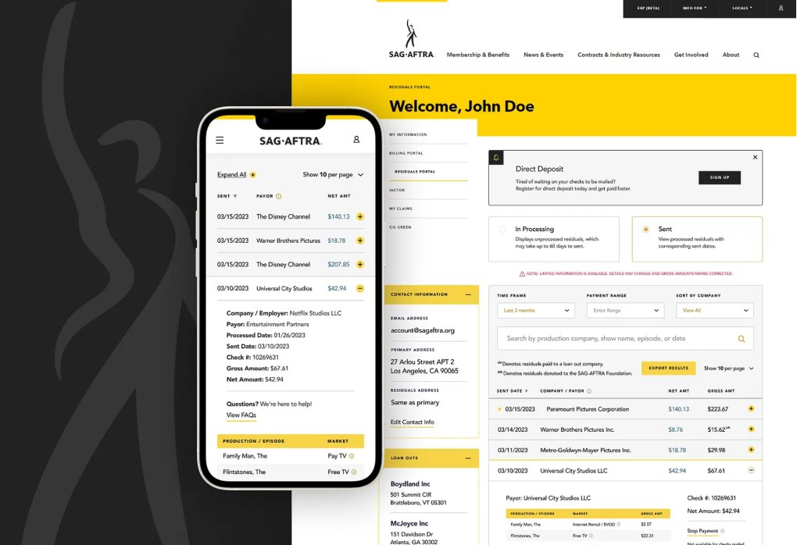
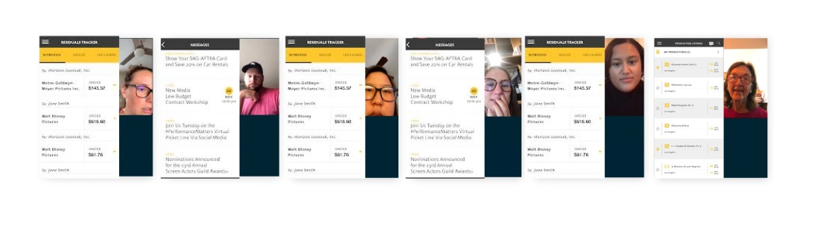
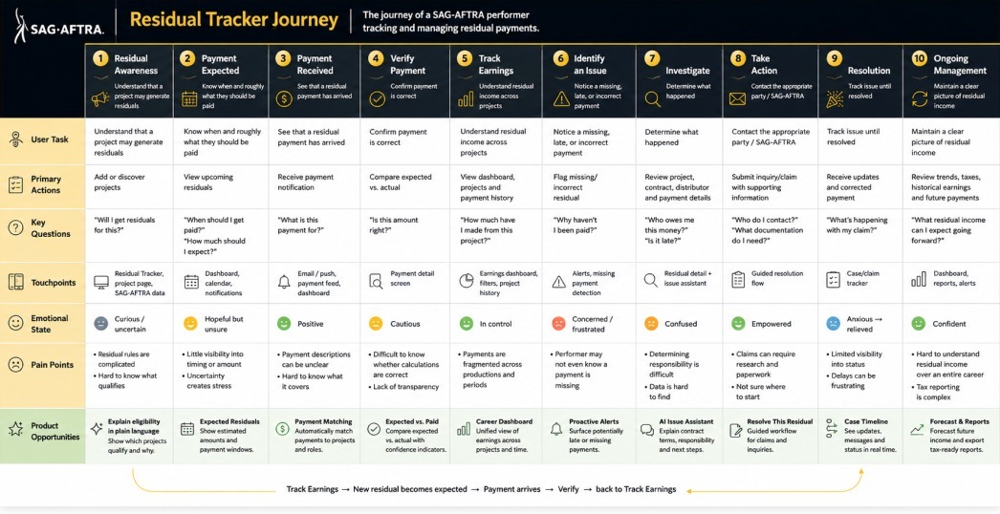
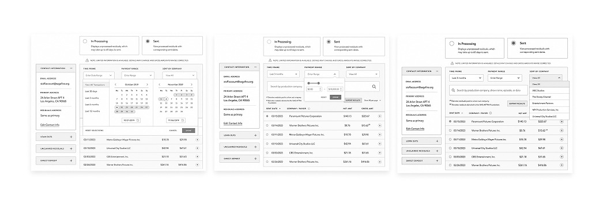
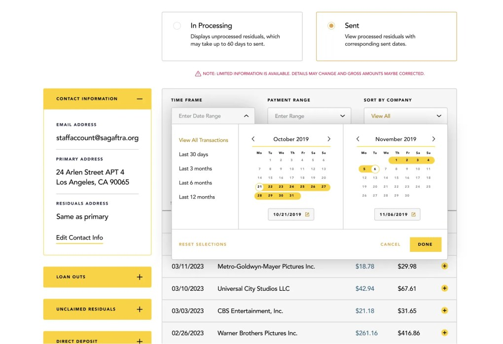
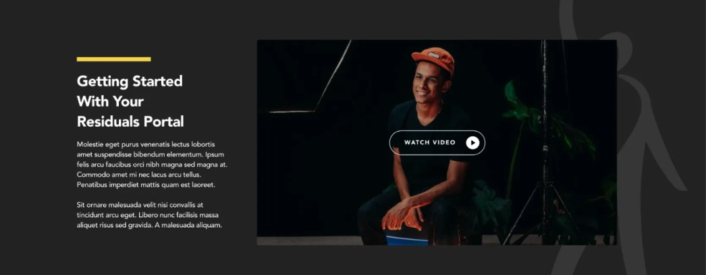

SAG-AFTRA
Where is my money?

Overview
Residuals are how actors get paid. Understanding where a payment sat in the process was needlessly opaque, so we made the union’s internal workflow visible to its members.
Research
Start with the people actually waiting for the money.
Structured interviews with thirty SAG-AFTRA members, not to test whether they could click through, but to learn how they think about residuals.

Designing for transparency
Show the process, not just the result.
Members were seeing Paid or Not paid. The journey in between was invisible, and that gap is where the anxiety lived.

Hierarchy
Not every piece of information is equally important.
Rebuilt around the five questions a member actually arrives with: how much, what for, where is it, do I need to act, what happens next.



Outcome
We weren’t simply reducing clicks. We were reducing uncertainty.
Next project
LEGOLAND
A park-wide game with no kid-facing screen time.